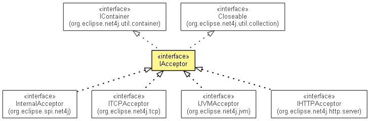

-
- All Superinterfaces:
- Closeable, IContainer<IConnector>, INotifier
- All Known Subinterfaces:
- IHTTPAcceptor, IJVMAcceptor, InternalAcceptor, ITCPAcceptor
- All Known Implementing Classes:
- Acceptor
public interface IAcceptor extends IContainer<IConnector>, Closeable
Accepts incoming connection requests fromclientconnectorsand creates the appropriateserverconnectors.Since the process of accepting connection requests is heavily dependent on the implementation of the respective connectors the only public API is introspection and notification.
This interface is not intended to be implemented by clients. Service providers must extend the abstract
Acceptorclass.- Class Diagram:

- Sequence Diagram:

- No Implement
- This interface is not intended to be implemented by clients.
-
-
Nested Class Summary
-
Nested classes/interfaces inherited from interface org.eclipse.net4j.util.container.IContainer
IContainer.Modifiable<E>, IContainer.Persistable<E>, IContainer.Persistence<E>
-
-
Method Summary
Methods Modifier and Type Method and Description IConnector[]getAcceptedConnectors()Returns an array of the connectors that have been accepted by this acceptor and not been closed since.-
Methods inherited from interface org.eclipse.net4j.util.container.IContainer
getElements, isEmpty
-
Methods inherited from interface org.eclipse.net4j.util.event.INotifier
addListener, getListeners, hasListeners, removeListener
-
-
-
-
Method Detail
-
getAcceptedConnectors
IConnector[] getAcceptedConnectors()
Returns an array of the connectors that have been accepted by this acceptor and not been closed since.
-
-